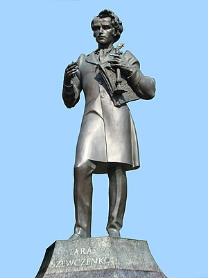

Більшість сучасників Шевченка відзначали, що він мав міцну статуру й був середнього зросту, який складав 2 аршини і 5 вершків (близько 165 см).[177][178] Знайомий поета, офіцер Микола Момбеллі, описав його у середині 1840-х років так:
Він середнього зросту, широкоплечий і взагалі кремезної, міцної будови, в талії широкий через особливу будову кісток, але аж ніяк не товстий. Обличчя кругле, борода і вуса завжди виголені, бакенбарди ж каймою обводять усе обличчя, волосся вистрижене по-козацьки, але зачесане назад. Він не брюнет і не блондин, але ближче до брюнета, не тільки за волоссям, але й закольором червонуватої шкіри; риси обличчя звичайні.
Російський письменник Іван Тургенєв, який уперше зустрівся з поетом узимку 1859 року, писав:
Широкоплечий, приземкуватий, кремезний, Шевченко мав тип козака, з помітними ознаками солдатської виправки і ломки. Голова гостроверха, майже лиса, високий зморшкуватий лоб, широкий, так званий "качиний", ніс, густі вуса, звислі губи, невеликі сірі очі, погляд яких, завжди похмурий і недовірливий, інколи набирав виразу лагідного, майже ніжного, і супроводжувався хорошою, доброю усмішкою. Голос трохи хрипкий, вимова чисто російська, рухи спокійні, хода поважна, постать вайлувата і мало елегантна
Попри те, що Шевченко протягом життя був «душею компанії»,[179][180] любив сміятися,[180][181] допомагати іншим[182] і вмів розвеселити незнайомих людей,[179] його звикли показувати із суворим виразом обличчя. Також хоча він помер доволі молодим (у 47 років), його часто відтворюють як дідуся, із зморшками.[183] Про плекання за радянської влади образу саме такого суворого й похмурого Шевченка, розповідав скульптор Леонід Молодожанин, автор кількох пам'ятників Шевченкові за кордоном. У 1930-х роках він був студентом Ленінградської академії мистецтв у класі скульптури професора Матвія Манізера. Разом з іншими студентами він допомагав Манізеру моделювати пам'ятник Шевченка для Києва. Коли проєкт пам'ятника був готовим, на роботу приїхали поглянути Лазар Каганович і Микита Хрущов. Побачивши під фігурою Шевченка персонажів із «Гайдамаків» (подібно до харківського пам'ятника Шевченку), Каганович накинувся на Манізера з критикою: мовляв, такий Шевченко надихатиме селян повстати проти радянської влади. Він наказав прибрати всіх персонажів, змінити фігуру Шевченка з випнутими грудьми на фігуру з похиленою уперед головою, наказав прибрати Шевченкові руки за спину та повісити на них якусь важку одежину. Манізер переробив пам'ятник за «порадами» Кагановича й у такому вигляді його було відлито з бронзи і встановлено 1939 року. 25 років потому, в 1964-му, відкрито пам'ятник молодому Шевченку роботи самого Молодожанина. Шевченко відтворений на ньому з випнутими грудьми, спрямованим уперед.